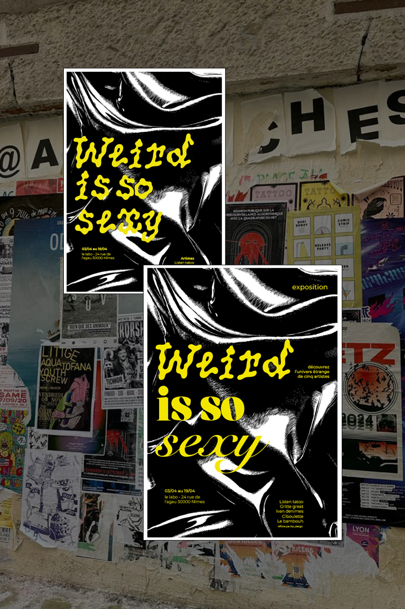

Design engagé · Affiche d’exposition
Weird
is so sexy
Trois pistes d’affiches pour une exposition autour du bizarre à Nîmes, avec @le.bambouh. Une carte blanche pour sortir des codes habituels de la communication et construire un univers graphique.

Coulisses de création
Le bizarre,
carte blanche.
Le brief : une exposition autour du bizarre. Pas de contrainte de communication, carte blanche.
C’est mon terrain de jeu préféré en tant que graphiste : quand on peut sortir de la communication classique et aller chercher un univers.
Trois directions
Chercher,
puis choisir.
Texture et photo déformée
Une première piste pour explorer le côté dérangeant.
Une typographie qui bouge
Une deuxième piste pour créer cette sensation de ne plus savoir où regarder.
La piste finale
Un mélange des deux directions, entre travail de la matière et jeu typographique.

La démarche
Plus qu’une
affiche.
Pourquoi montrer ces recherches ? Parce que le plus gros du travail d’une affiche d’exposition, ce n’est pas la version finale. C’est aussi tout ce qu’on écarte avant.
Faire appel à une graphiste, c’est investir dans cette réflexion : trois idées pour en trouver une qui accroche vraiment dans la rue.